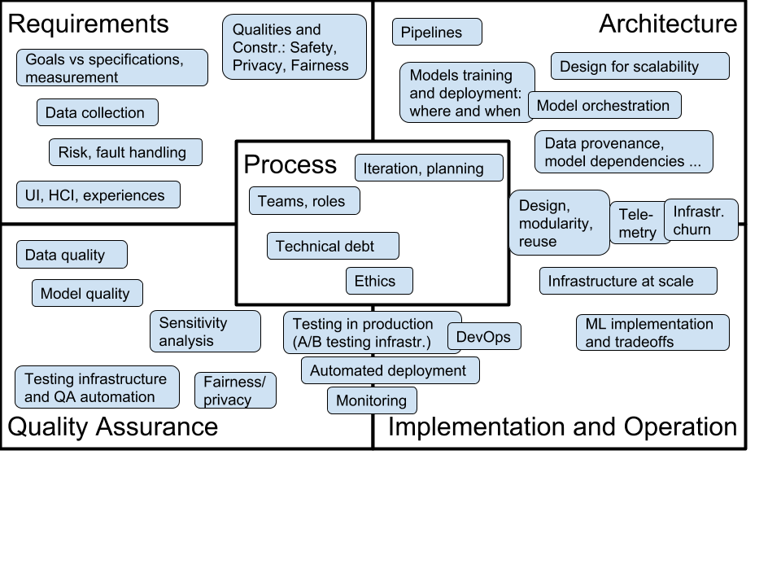

Update 2020: The class will be offered both in the Summer term and in the Fall semester 2020. The Summer offering will be more targeted towards students with software engineering experience (e.g., software engineering course, industrial experience, or internship experience), but will expect no data science background. The Fall offering will be targeted more at students with some data science experience (e.g., a machine learning course on campus or online), but will expect no software engineering background.
The course takes a software engineering perspective on building software systems with a significant machine learning or AI component. It discusses how to take an idea and a model developed by a data scientist (e.g., scripts and Jupyter notebook) and deploy it as part of scalable and maintainable system (e.g., mobile apps, web applications, IoT devices). Rather than focusing on modeling and learning itself, this course assumes a working relationship with a data scientist and focuses on issues of design, implementation, operation, and assurance and how those interact with the data scientist's modeling.
This course is aimed at software engineers who want to understand the specific challenges of working with AI components and at data scientists who want to understand the challenges of getting a prototype model into production; it facilitates communication and collaboration between both roles.
For researchers, educators, or others interested in this topic, we share all course material under a creative commons license on GitHub (https://github.com/ckaestne/seai/) and have recently published an article describing the rationale and the design of this course: Teaching Software Engineering for AI-Enabled Systems. See also an annotated bibliography on the topic.
{kind=link}
Questions
- How can correctness or usefulness of a system with an AI component be specified or evaluated? How to collect requirements for AI-enabled systems?
- How to analyze and mitigate wrong results and how to design robust systems? Is modular design still possible with AI components?
- How and where to deploy models, how and when to update models, and what telemetry to collect? How to design learning and evaluation infrastructure that scales?
- How to compose multiple AI components within a system and detect feedback loops? What does software architecture for AI-enabled systems look like?
- How to detect poor data quality, poor model quality, and data drift? What would unit testing for data look like?
- How to assure quality of an AI-enabled system? How would test automation look like to test correctness of infrastructure or models?
- How to assure fairness and privacy of AI-enabled systems?
Learning Outcomes
After taking this course, among others, students should be able to
- analyze tradeoffs for designing production systems with AI-components, analyzing various qualities beyond accuracy such as operation cost, latency, updateability, and explainability
- implement production-quality systems that are robust to mistakes of AI components
- design fault-tolerant and scalable data infrastructure for learning models, serving models, versioning, and experimentation
- ensure quality of the entire machine learning pipeline with test automation and other quality assurance techniques, including automated checks for data quality, data drift, feedback loops, and model quality
- build systems that can be tested in production and build deployment pipelines that allow careful rollouts and canary testing
- consider privacy, fairness, and security when building complex AI-enabled systems
- communicate effectively in teams with both software engineers and data analysts
In addition, students will gain familiarity with production-quality infrastructure tools, including stream processing with Apache Kafka, distributed data storage with SQL and NoSQL databases, deployment with Docker and Kubernetes, and test automation with Travis and Jenkins.
Design Rationale
- Data scientists often make great progress at building models with cutting edge techniques but turning those models into products is challenging. For example, data scientists may work with unversioned notebooks on static data sets and focus on prediction accuracy while ignoring scalability, robustness, update latency, or operating cost.
- Software engineers are trained with clear specifications and tend to focus on code, but may not be aware of the difficulties of working with data and unreliable models. They have a large toolset for decision making and quality assurance but it is not obvious how to apply those to AI-enabled systems and their challenges.
- To what degree can existing SE practices be used for building intelligent systems? To what degree are new practices needed?
- This course adopts a software engineering perspective on building intelligent systems, focusing on what a software engineer can do to turn a machine learning idea into a scalable and reliable product. Rather than focusing on modeling and learning itself, it assumes a working relationship with a data scientist and focuses on issues of design, implementation, operation, and assurance and how those interact with the data scientist's modeling.
- The course will use software and systems engineering terminology and techniques (e.g., test coverage, architecture views, fault trees) and make explicit transfers to challenges posed by using machine learning/AI components. The course will not teach fundamentals of machine learning or AI, but will assume a basic understanding of relevant concepts (e.g., feature engineering, linear regression vs fault trees vs neural networks). It will heavily train design thinking and tradeoff analysis. It will focus primarily on practical approaches that can be used now and will feature hands-on practice with modern tools and infrastructure.
Logistics and People
17-445/17-645, 12 Units
Open to undergraduate and graduate students meeting the prerequisites.
Summer 2020
Targeted at students with a software engineering background (see prerequisites below)
Lectures Tuesday+Thursday 3-4:20pm, Room 3SC 265 (Craig Street)
Recitation Wednesday 12:30-1:50pm
Instructor: Christian Kaestner
Fall 2020
Targeted at students with a data science background (see prerequisites below)
Lectures times tdb.
Instructors: Christian Kaestner and Eunsuk Kang
Fall 2019
Lectures Monday/Wednesdays 1:30-2:50, GHC 4211
Recitation Fridays 10:30-11:20, GHC 4102
Instructors: Christian Kaestner and Eunsuk Kang
Teaching assistant: Chu-Pan Wong
Office Hours:
- Christian, Monday 9:30-10:25, Wean 5126
- Eunsuk, By appointment, Wean 5319
- Chu-Pan, Wednesday 15:00-16:00, Wean 4103
Coordination
Unless you have questions to specific instructors, we prefer that you email us at se-ai@lists.andrew.cmu.edu, where you will reach the entire teaching staff of the course.
All instructors and teaching assistants have an open door policy: If our office door is open and no-one else is meeting with us, we are happy to answer any course-related questions. If you prefer an appointment, email the instructors or talk to us before or after class.
Course content
Course content is still under development. A more detailed breakdown of topics and learning goals can be found under Learning Goals. Below is a table of the current schedule with links to select lectures. Of of this is subject to change and will be updated as the semester progresses, especially to help focus on requested topics or support learning.
(Preliminary schedule, subject to change)

Course Syllabus and Policies
The course uses Canvas for homework submission, grading, discussion, questions, announcements, and supplementary documents; slides will be posted here; github is used to coordinate group work.
Prerequisites: Offerings in different semesters may be targeted at students with different backgrounds. The course does not have formal prerequesites, but we describe background knowledge that will help you be successful in the course. Also note that the course always has a substantial programming component, so solid programming skills will be benefitial (we do not prescribe a programming language, but most student teams decide to work primarily in Python).
Summer 2020: We expect basic exposure to software engineering, but do not require machine learning skills. We suggest that you have a basic familiarity with using version control, gathering requirements, software design and modeling, testing and test automation. Courses 17-313, and 17-654, 17-655 will prepare you well, but you may also have prerequisite software engineering knowledge from other courses or practical work experience, including software-engineering-heavy internships. The Summer 2020 offering will include a crash course on machine learning.
Fall 2020: We expect basic exposure to machine learning and reasonable programming skills, but do not require a software engineering background. We suggest that you have basic familiarity with the process of extracting features, building and evaluating models, and a basic understanding of how and when different kinds of learning techniques work. Courses such as 10-301, 10-315, and 05-434 will prepare you well, but project experience or self-learning from books or online courses will likely be sufficient for our purposes. The Fall 2020 offering will cover basic software engineering concepts in more depth than the Summer 2020 offering.
Students with both data science and software engineering background are well prepared for all offerings of the class.
We have set up a prerequisite knowledge check in the course's Canvas repository, where we ask 10 questions on software engineering and 10 questions on machine learning, which help you assess your background. This is set up as an ungraded quiz, where you can compare your knowledge against what we believe is useful for you to be successful in this course. The system will give specific pointers to readings and exercises that may help you fill gaps in background knowledge. Email us (se-ai@lists.andrew.cmu.edu) if you would like access to this check before signing up for the course or if like to talk to us about prerequisites.
Teamwork: Teamwork is an essential part of this course. Many assignments are done in teams of 3-5 students. Teams will be assigned by the instructor and stay together for multiple assignments. A team policy posted on Canvas applies and describes roles and teams and how to deal with conflicts and imbalances.
Communication: We make announcements through Canvas and use Canvas also for discussions, including clarifying homework assignments and other interactions. The instructors and TAs hold weekly office hours and are reachable by email; see above for information on how to contact us. Email them for additional appointments. They also have an open-door policy: When our door is open and we are not currently meeting with somebody else, feel free to interrupt us for course-related issues.
Textbook: We will be using Goeff Hulten's *"Building Intelligent Systems: A Guide to Machine Learning Engineering"* (ISBN: 1484234316) throughout much of the course. The library provides an electronic copy. In addition, we will provide additional supplementary readings, including blog posts and academic papers, throughout the semester.
Grading: Evaluation will be based on the following distribution: 50% assignments, 15% midterm, 20% final, 10% participation, 5% reading quizzes.
Time management: This is a 12-unit course, and it is our intention to manage it so that you spend close to 12 hours a week on the course, on average. In general, 4 hours/week will be spent in class and 8 hours on reading and assignments. Notice that much homework is done in groups, so please account for the overhead and decreased time flexibility that comes with groupwork. Please feel free to give the course staff feedback on how much time the course is taking for you.
Late work policy: Late work in group assignments will receive feedback but no credit. Late work in individual assignments will be accepted with a 10% penalty per day, for up to 3 days. Exceptions to this policy will be made only in extraordinary circumstances, almost always involving a family or medical emergency---with your academic advisor or the Dean of Student Affairs requesting the exception on your behalf. Accommodations for travel (e.g., for interviews) might be possible if requested at least 3 days in advance. Please communicate also with your team about timing issues.
Writing: Describing tradeoffs among decisions and communication with stakeholders from other backgrounds are key aspects of this class. Many homework assignments have a component that requires discussing issues in written form or reflecting about experiences. To practice writing skills, the Global Communications Center (GCC) offers one-on-one help for students, along with workshops. The instructors are also happy to provide additional guidance if requested.
Academic honesty and collaboration: The usual policies apply, especially the University Policy on Academic Integrity. Many assignments will be done in groups. We expect that group members collaborate with one another, but that groups work independently from one another, not exchanging results with other groups. Within groups, we expect that you are honest about your contribution to the group's work. This implies not taking credit for others' work and not covering for team members that have not contributed to the team. Otherwise, our expectations regarding academic honestly and collaboration for group work are the same as for individual work, substituting elevated to the level of "group." The rest of this academic honesty and collaboration content is taken from the policy used in 15-214, which we reuse almost directly (with minor modifications, and attribution). "You may not copy any part of a solution to a problem that was written by another student, or was developed together with another student, or was copied from another unauthorized source such as the Internet. You may not look at another student's solution, even if you have completed your own, nor may you knowingly give your solution to another student or leave your solution where another student can see it. Here are some examples of behavior that are inappropriate:
- Copying or retyping, or referring to, files or parts of files (such as source code, written text, or unit tests) from another person or source (whether in final or draft form, regardless of the permissions set on the associated files) while producing your own. This is true even if your version includes minor modifications such as style or variable name changes or minor logic modifications.
- Getting help that you do not fully understand, and from someone whom you do not acknowledge on your solution.
- Writing, using, or submitting a program that attempts to alter or erase grading information or otherwise compromise security of course resources.
- Lying to course staff.
- Giving copies of work to others, or allowing someone else to copy or refer to your code or written assignment to produce their own, either in draft or final form. This includes making your work publicly available in a way that other students (current or future) can access your solutions, even if others' access is accidental or incidental to your goals. Beware the privacy settings on your open source accounts!
- Coaching others step-by-step without them understanding your help. If any of your work contains any statement that was not written by you, you must put it in quotes and cite the source. If you are paraphrasing an idea you read elsewhere, you must acknowledge the source. Using existing material without proper citation is plagiarism, a form of cheating. If there is any question about whether the material is permitted, you must get permission in advance. We will be using automated systems to detect software plagiarism. It is not considered cheating to clarify vague points in the assignments, lectures, lecture notes; to give help or receive help in using the computer systems, compilers, debuggers, profilers, or other facilities; or to discuss ideas at a very high level, without referring to or producing code. Any violation of this policy is cheating. The minimum penalty for cheating (including plagiarism) will be a zero grade for the whole assignment. Cheating incidents will also be reported through University channels, with possible additional disciplinary action (see the above-linked University Policy on Academic Integrity). If you have any question about how this policy applies in a particular situation, ask the instructors or TAs for clarification." Note that the instructors respect honesty in these (and indeed most!) situations.
Accommodations for students with disabilities: If you have a disability and have an accommodations letter from the Disability Resources office, we encourage you to discuss your accommodations and needs with us as early in the semester as possible. We will work with you to ensure that accommodations are provided as appropriate. If you suspect that you may have a disability and would benefit from accommodations but are not yet registered with the Office of Disability Resources, we encourage you to contact them at access@andrew.cmu.edu.
A note on self care. Please take care of yourself. Do your best to maintain a healthy lifestyle this semester by eating well, exercising, avoiding drugs and alcohol, getting enough sleep and taking some time to relax. This will help you achieve your goals and cope with stress. All of us benefit from support during times of struggle. You are not alone. There are many helpful resources available on campus and an important part of the college experience is learning how to ask for help. Asking for support sooner rather than later is often helpful. If you or anyone you know experiences any academic stress, difficult life events, or feelings like anxiety or depression, we strongly encourage you to seek support. Counseling and Psychological Services (CaPS) is here to help: call 412-268-2922 and visit their website at http://www.cmu.edu/counseling/. Consider reaching out to a friend, faculty or family member you trust for help getting connected to the support that can help.
Related Courses
- 17-640 IoT, Big Data, and ML: A hands-on class building an IoT system with a significant machine learning component. This course is more focused on embedded devices and IoT and focuses on a specific scenario where machine learning is used, whereas we survey software engineering challenges across AI-enabled systems more broadly.
- 17-649 Artificial Intelligence for Software Engineering: This course focuses on how AI techniques can be used to build better software engineering tools and goes into more depth with regard to specific AI techniques, whereas we focus on how software engineering techniques can be used to build AI-enabled systems. Our application scenarios are typical web-based systems for end users, rather than tools for software developers.
- 17-646 DevOps: Modern Deployment, 17-647 Engineering Data Intensive Scalable Systems, and similar: These course cover techniques to build scalable, reactive, and reliable systems in depth. We will survey DevOps and big data systems (e.g., batch processing, stream processing), but will not explore them in as much detail as a dedicated course can.
- 10-601 Machine Learning, 15-381 Artificial Intelligence: Representation and Problem Solving, 05-834 Applied Machine Learning, 95-865 Unstructured Data Analytics, and many others: CMU offers many course that teach how machine learning and artificial intelligence techniques work internally and how to apply them to specific problems (including feature engineering and model evaluation), often on static data sets. We assume a basic understanding of such techniques and processes (see prerequisites) but focus on the engineering process for production online systems.